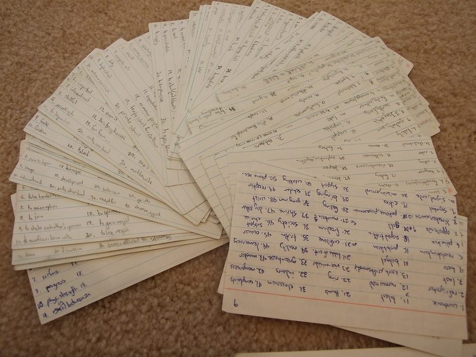

Los 207 verbos con las cuatro columnas de la tabla de clase: significado, Präsens (con la 3ª persona cuando cambia), Präteritum y Partizip II con su auxiliar. Irregulares, mixtos y regulares, buscables y filtrables.
| Columna | Qué contiene |
|---|---|
| Präsens | El infinitivo. Entre paréntesis, la 3ª persona del singular cuando es irregular: essen (isst) → er isst. |
| Präteritum | El pasado simple. Se usa sobre todo al escribir y con sein/haben/modales al hablar. |
| Partizip II | Para el Perfekt, con su auxiliar delante: hat o ist. |
| Tipo | Präteritum | Partizip II | Ejemplo |
|---|---|---|---|
| Regular (schwach) · 59 | raíz + -te | ge + raíz + -t | machen · machte · gemacht |
| Irregular (stark) · 139 | raíz cambiada | ge + raíz + -en | trinken · trank · getrunken |
| Mixto (gemischt) · 9 | raíz cambiada + -te | ge + raíz cambiada + -t | denken · dachte · gedacht |
Si reconoces el patrón, deduces el Präteritum y el Partizip sin haberlos memorizado uno a uno.
| Patrón | Modelo | Otros del grupo |
|---|---|---|
| i → a → u | trinken · trank · getrunken | finden, singen, springen, gelingen, zwingen, sinken |
| ei → ie → ie | schreiben · schrieb · geschrieben | bleiben, steigen, scheinen, treiben, leihen, weisen |
| ei → i → i | reiten · ritt · geritten | schneiden, greifen, pfeifen, streiten, reißen |
| ie → o → o | fliegen · flog · geflogen | ziehen, verlieren, schließen, riechen, schieben, genießen |
| e → a → o | nehmen · nahm · genommen | helfen, sprechen, treffen, werfen, sterben, stehlen |
| e → a → e | essen · aß · gegessen | lesen, sehen, geben, treten, messen, vergessen |
| a → u → a | fahren · fuhr · gefahren | tragen, waschen, schlagen, laden, graben, wachsen |
| a → ie → a | schlafen · schlief · geschlafen | fallen, halten, lassen, raten, braten, blasen |
Muchos irregulares también cambian en presente, pero solo en du y er/sie/es. El resto de personas van normales. Por eso la columna Präsens lleva esa forma entre paréntesis.
| Cambio | Infinitiv | du | er/sie/es | Otros del grupo |
|---|---|---|---|---|
| e → i | sprechen | du sprichst | er spricht | essen, geben, helfen, nehmen, treffen, werfen |
| e → ie | sehen | du siehst | er sieht | lesen, empfehlen, stehlen, geschehen |
| a → ä | fahren | du fährst | er fährt | schlafen, tragen, waschen, halten, fallen, laufen |
| au → äu | laufen | du läufst | er läuft | saufen |
| o → ö | stoßen | du stößt | er stößt | — |
Busca en alemán o en español. Los filtros acotan por tipo o por auxiliar.
| Significado | Präsens | Präteritum | Partizip II |
|---|---|---|---|
| empezar | anfangen (fängt an) | fing an | hat angefangen |
| llegar | ankommen | kam an | ist angekommen |
| llamar por teléfono | anrufen | rief an | hat angerufen |
| vestir | anziehen (zieht an) | zog an | hat angezogen |
| 🔥 levantarse | aufstehen | stand auf | ist aufgestanden |
| salir | ausgehen | ging aus | ist ausgegangen |
| hornear | backen (bäckt) | backte | hat gebacken |
| ordenar / mandar | befehlen (befiehlt) | befahl | hat befohlen |
| comenzar | beginnen | begann | hat begonnen |
| recibir | bekommen | bekam | hat bekommen |
| engañar | betrügen | betrog | hat betrogen |
| demostrar | beweisen | bewies | hat bewiesen |
| doblar | biegen | bog | hat gebogen |
| ofrecer | bieten | bot | hat geboten |
| atar | binden | band | hat gebunden |
| pedir | bitten | bat | hat gebeten |
| soplar | blasen (bläst) | blies | hat geblasen |
| permanecer / quedarse | bleiben | blieb | ist geblieben |
| freír | braten (brät) | briet | hat gebraten |
| arder | brennen | brannte | hat gebrannt |
| traer | bringen | brachte | hat gebracht |
| pensar | denken | dachte | hat gedacht |
| poder / tener permiso | dürfen (darf) | durfte | hat gedurft |
| invitar | einladen (lädt ein) | lud ein | hat eingeladen |
| dormirse | einschlafen (schläft ein) | schlief ein | ist eingeschlafen |
| recibir / acoger | empfangen (empfängt) | empfing | hat empfangen |
| recomendar | empfehlen (empfiehlt) | empfahl | hat empfohlen |
| sentir / percibir | empfinden | empfand | hat empfunden |
| asustarse | erschrecken (erschrickt) | erschrak | ist erschrocken |
| 🔥 comer | essen (isst) | aß | hat gegessen |
| 🔥 viajar / ir (en vehículo) | fahren (fährt) | fuhr | hat/ist gefahren |
| caer | fallen (fällt) | fiel | ist gefallen |
| coger / atrapar | fangen (fängt) | fing | hat gefangen |
| ver la tele | fernsehen (sieht fern) | sah fern | hat ferngesehen |
| encontrar | finden | fand | hat gefunden |
| trenzar | flechten (flicht) | flocht | hat geflochten |
| volar | fliegen | flog | hat/ist geflogen |
| huir | fliehen | floh | ist geflohen |
| fluir | fließen | floss | ist geflossen |
| devorar | fressen (frisst) | fraß | hat gefressen |
| helarse | frieren | fror | hat/ist gefroren |
| dar | geben (gibt) | gab | hat gegeben |
| 🔥 ir / caminar | gehen | ging | ist gegangen |
| lograr / salir bien | gelingen | gelang | ist gelungen |
| valer / ser válido | gelten (gilt) | galt | hat gegolten |
| disfrutar | genießen | genoss | hat genossen |
| suceder | geschehen (geschieht) | geschah | ist geschehen |
| ganar | gewinnen | gewann | hat gewonnen |
| verter / regar | gießen | goss | hat gegossen |
| parecerse | gleichen | glich | hat geglichen |
| cavar | graben (gräbt) | grub | hat gegraben |
| agarrar | greifen | griff | hat gegriffen |
| 🔥 tener | haben (hat) | hatte | hat gehabt |
| sostener / parar | halten (hält) | hielt | hat gehalten |
| levantar | heben | hob | hat gehoben |
| llamarse | heißen | hieß | hat geheißen |
| ayudar | helfen (hilft) | half | hat geholfen |
| estar colgado | hängen | hing | hat gehangen |
| conocer | kennen | kannte | hat gekannt |
| sonar | klingen | klang | hat geklungen |
| 🔥 venir | kommen | kam | ist gekommen |
| poder / saber | können (kann) | konnte | hat gekonnt |
| cargar | laden (lädt) | lud | hat geladen |
| dejar | lassen (lässt) | ließ | hat gelassen |
| correr / andar | laufen (läuft) | lief | ist gelaufen |
| sufrir | leiden | litt | hat gelitten |
| prestar | leihen | lieh | hat geliehen |
| 🔥 leer | lesen (liest) | las | hat gelesen |
| estar tumbado | liegen | lag | hat gelegen |
| mentir | lügen | log | hat gelogen |
| evitar | meiden | mied | hat gemieden |
| medir | messen (misst) | maß | hat gemessen |
| traer consigo | mitbringen | brachte mit | hat mitgebracht |
| acompañar | mitkommen | kam mit | ist mitgekommen |
| gustar | mögen (mag) | mochte | hat gemocht |
| deber / tener que | müssen (muss) | musste | hat gemusst |
| 🔥 tomar / coger | nehmen (nimmt) | nahm | hat genommen |
| nombrar | nennen | nannte | hat genannt |
| silbar | pfeifen | pfiff | hat gepfiffen |
| aconsejar / adivinar | raten (rät) | riet | hat geraten |
| frotar / rallar | reiben | rieb | hat gerieben |
| montar a caballo | reiten | ritt | ist geritten |
| rasgar | reißen | riss | hat gerissen |
| correr (deprisa) | rennen | rannte | ist gerannt |
| oler | riechen | roch | hat gerochen |
| llamar / gritar | rufen | rief | hat gerufen |
| crear | schaffen | schuf | hat geschaffen |
| brillar / parecer | scheinen | schien | hat geschienen |
| empujar | schieben | schob | hat geschoben |
| disparar | schießen | schoss | hat geschossen |
| 🔥 dormir | schlafen (schläft) | schlief | hat geschlafen |
| golpear | schlagen (schlägt) | schlug | hat geschlagen |
| cerrar | schließen | schloss | hat geschlossen |
| cortar | schneiden | schnitt | hat geschnitten |
| 🔥 escribir | schreiben | schrieb | hat geschrieben |
| gritar | schreien | schrie | hat geschrien |
| callar | schweigen | schwieg | hat geschwiegen |
| nadar | schwimmen | schwamm | ist geschwommen |
| 🔥 ver | sehen (sieht) | sah | hat gesehen |
| 🔥 ser / estar | sein (ist) | war | ist gewesen |
| cantar | singen | sang | hat gesungen |
| hundirse | sinken | sank | ist gesunken |
| estar sentado | sitzen | saß | hat gesessen |
| deber (consejo) | sollen (soll) | sollte | hat gesollt |
| 🔥 hablar | sprechen (spricht) | sprach | hat gesprochen |
| saltar | springen | sprang | ist gesprungen |
| picar / pinchar | stechen (sticht) | stach | hat gestochen |
| estar de pie | stehen | stand | hat gestanden |
| robar | stehlen (stiehlt) | stahl | hat gestohlen |
| subir | steigen | stieg | ist gestiegen |
| morir | sterben (stirbt) | starb | ist gestorben |
| apestar | stinken | stank | hat gestunken |
| empujar / chocar | stoßen (stößt) | stieß | hat gestoßen |
| pintar (brocha) | streichen | strich | hat gestrichen |
| discutir / pelear | streiten | stritt | hat gestritten |
| participar | teilnehmen (nimmt teil) | nahm teil | hat teilgenommen |
| llevar / cargar | tragen (trägt) | trug | hat getragen |
| encontrarse con | treffen (trifft) | traf | hat getroffen |
| impulsar | treiben | trieb | hat getrieben |
| pisar / entrar | treten (tritt) | trat | hat/ist getreten |
| 🔥 beber | trinken | trank | hat getrunken |
| hacer | tun | tat | hat getan |
| hacer transbordo | umsteigen | stieg um | ist umgestiegen |
| olvidar | vergessen (vergisst) | vergaß | hat vergessen |
| perder | verlieren | verlor | hat verloren |
| entender | verstehen | verstand | hat verstanden |
| proponer | vorschlagen (schlägt vor) | schlug vor | hat vorgeschlagen |
| crecer | wachsen (wächst) | wuchs | ist gewachsen |
| lavar | waschen (wäscht) | wusch | hat gewaschen |
| señalar | weisen | wies | hat gewiesen |
| hacer publicidad | werben (wirbt) | warb | hat geworben |
| 🔥 llegar a ser / volverse | werden (wird) | wurde | ist geworden |
| lanzar | werfen (wirft) | warf | hat geworfen |
| pesar | wiegen | wog | hat gewogen |
| saber | wissen (weiß) | wusste | hat gewusst |
| querer | wollen (will) | wollte | hat gewollt |
| tirar / mudarse | ziehen | zog | hat/ist gezogen |
| regresar | zurückkommen | kam zurück | ist zurückgekommen |
| forzar | zwingen | zwang | hat gezwungen |
| arder | brennen | brannte | hat gebrannt |
| traer | bringen | brachte | hat gebracht |
| pensar | denken | dachte | hat gedacht |
| conocer | kennen | kannte | hat gekannt |
| nombrar | nennen | nannte | hat genannt |
| correr (deprisa) | rennen | rannte | ist gerannt |
| enviar | senden | sandte / sendete | hat gesandt / gesendet |
| girar / dar la vuelta | wenden | wandte / wendete | hat gewandt / gewendet |
| saber | wissen (weiß) | wusste | hat gewusst |
| recoger | abholen | holte ab | hat abgeholt |
| responder | antworten | antwortete | hat geantwortet |
| trabajar | arbeiten | arbeitete | hat gearbeitet |
| dejar de / terminar | aufhören | hörte auf | hat aufgehört |
| ordenar / recoger | aufräumen | räumte auf | hat aufgeräumt |
| bañarse | baden | badete | hat gebadet |
| construir | bauen | baute | hat gebaut |
| significar | bedeuten | bedeutete | hat bedeutet |
| visitar | besuchen | besuchte | hat besucht |
| pagar | bezahlen | bezahlte | hat bezahlt |
| necesitar | brauchen | brauchte | hat gebraucht |
| agradecer | danken | dankte | hat gedankt |
| durar | dauern | dauerte | hat gedauert |
| discutir (debatir) | diskutieren | diskutierte | hat diskutiert |
| ducharse | duschen | duschte | hat geduscht |
| hacer la compra | einkaufen | kaufte ein | hat eingekauft |
| explicar | erklären | erklärte | hat erklärt |
| contar / narrar | erzählen | erzählte | hat erzählt |
| fotografiar | fotografieren | fotografierte | hat fotografiert |
| preguntar | fragen | fragte | hat gefragt |
| desayunar | frühstücken | frühstückte | hat gefrühstückt |
| funcionar | funktionieren | funktionierte | hat funktioniert |
| sentir(se) | fühlen | fühlte | hat gefühlt |
| creer | glauben | glaubte | hat geglaubt |
| oír / escuchar | hören | hörte | hat gehört |
| informar | informieren | informierte | hat informiert |
| comprar | kaufen | kaufte | hat gekauft |
| cocinar | kochen | kochte | hat gekocht |
| reír | lachen | lachte | hat gelacht |
| vivir (existir) | leben | lebte | hat gelebt |
| poner (acostado) | legen | legte | hat gelegt |
| aprender / estudiar | lernen | lernte | hat gelernt |
| amar | lieben | liebte | hat geliebt |
| hacer | machen | machte | hat gemacht |
| participar / apuntarse | mitmachen | machte mit | hat mitgemacht |
| organizar | organisieren | organisierte | hat organisiert |
| hacer la maleta | packen | packte | hat gepackt |
| ocurrir / pasar | passieren | passierte | ist passiert |
| probar | probieren | probierte | hat probiert |
| limpiar | putzen | putzte | hat geputzt |
| fumar | rauchen | rauchte | hat geraucht |
| viajar | reisen | reiste | ist gereist |
| reparar | reparieren | reparierte | hat repariert |
| reservar | reservieren | reservierte | hat reserviert |
| decir | sagen | sagte | hat gesagt |
| regalar | schenken | schenkte | hat geschenkt |
| sentar / colocar | setzen | setzte | hat gesetzt |
| jugar / tocar | spielen | spielte | hat gespielt |
| estudiar (carrera) | studieren | studierte | hat studiert |
| buscar | suchen | suchte | hat gesucht |
| bailar | tanzen | tanzte | hat getanzt |
| telefonear | telefonieren | telefonierte | hat telefoniert |
| entrenar | trainieren | trainierte | hat trainiert |
| vender | verkaufen | verkaufte | hat verkauft |
| esperar | warten | wartete | hat gewartet |
| vivir / residir | wohnen | wohnte | hat gewohnt |
| mostrar | zeigen | zeigte | hat gezeigt |
| escuchar (prestar atención) | zuhören | hörte zu | hat zugehört |
| abrir | öffnen | öffnete | hat geöffnet |
| Verbo | Trampa |
|---|---|
| vergessen · vergaß · vergessen | El Partizip es idéntico al infinitivo, y sin ge- (prefijo ver-). |
| bekommen · bekam · bekommen | Igual de idéntico. Y significa recibir, no "volverse". |
| passieren · passierte · ist passiert | Regular en su forma, pero va con sein. Y sin ge- por ser -ieren. |
| liegen · lag · gelegen | Estar tumbado (sin movimiento) → haben. No confundir con legen (poner), que es regular. |
| hängen · hing · gehangen | Estar colgado es irregular; colgar algo (hängen · hängte · gehängt) es regular. |
| schaffen · schuf · geschaffen | Crear es irregular; lograr/conseguir (schaffen · schaffte · geschafft) es regular. |
| erschrecken · erschrak · ist erschrocken | Asustarse (uno mismo) es irregular y va con sein; asustar a alguien es regular. |
| senden · sandte / sendete | Dos formas válidas: sandte para enviar algo, sendete para emitir (radio, TV). |
| Patrón | Verbos | Ejemplo en Perfekt |
|---|---|---|
| i – a – u | finden, trinken, singen, springen | Ich habe meinen Schlüssel gefunden. |
| i – a – o | beginnen, schwimmen, gewinnen | Der Film hat um acht begonnen. |
| ei – ie – ie | bleiben, schreiben, steigen, scheinen | Ich habe eine E-Mail geschrieben. |
| ei – i – i | reiten, schneiden, streiten | Er hat das Brot geschnitten. |
| ie – o – o | fliegen, verlieren, schließen, riechen | Ich habe meinen Pass verloren. |
| e – a – e | geben, lesen, sehen, essen | Wir haben den Film gesehen. |
| e – a – o | helfen, nehmen, sprechen, treffen, werfen | Sie hat mir geholfen. |
| a – u – a | fahren, tragen, waschen, laden | Ich bin nach Köln gefahren. |
| a – ie – a | schlafen, fallen, lassen, halten | Ich habe gut geschlafen. |
| au – ie – au | laufen | Er ist zehn Kilometer gelaufen. |
| u – ie – u | rufen | Sie hat ein Taxi gerufen. |
| mixtos (ge- … -t, con cambio) | bringen, denken, kennen, wissen, rennen | Das habe ich nicht gewusst. |
| los más irregulares | sein, gehen, stehen, tun, kommen | Wir sind ins Kino gegangen. |
| Infinitivo | Präteritum | Perfekt |
|---|---|---|
| sein | war | ist gewesen |
| haben | hatte | hat gehabt |
| werden | wurde | ist geworden |
| gehen | ging | ist gegangen |
| kommen | kam | ist gekommen |
| tun | tat | hat getan |
| stehen | stand | hat gestanden |
| wissen | wusste | hat gewusst |
| bringen | brachte | hat gebracht |
| denken | dachte | hat gedacht |
| Verbo | Perfekt | Frase |
|---|---|---|
| beginnen | hat begonnen | Der Kurs hat pünktlich begonnen. |
| bitten | hat gebeten | Ich habe ihn um Hilfe gebeten. |
| brechen | hat gebrochen | Er hat sich das Bein gebrochen. |
| empfehlen | hat empfohlen | Der Arzt hat mir Ruhe empfohlen. |
| fallen | ist gefallen | Das Kind ist vom Fahrrad gefallen. |
| fangen | hat gefangen | Er hat den Ball gefangen. |
| geben | hat gegeben | Sie hat mir ihre Nummer gegeben. |
| gefallen | hat gefallen | Der Film hat mir gut gefallen. |
| gewinnen | hat gewonnen | Mexiko hat gewonnen! |
| halten | hat gehalten | Der Bus hat an der Ecke gehalten. |
| helfen | hat geholfen | Mein Kollege hat mir geholfen. |
| kennen | hat gekannt | Ich habe ihn nicht gekannt. |
| leihen | hat geliehen | Sie hat mir ihr Auto geliehen. |
| liegen | hat gelegen | Ich habe den ganzen Tag im Bett gelegen. |
| rennen | ist gerannt | Er ist zum Bus gerannt. |
| riechen | hat gerochen | Es hat nach Kaffee gerochen. |
| scheinen | hat geschienen | Gestern hat die Sonne geschienen. |
| schließen | hat geschlossen | Ich habe die Tür geschlossen. |
| schneiden | hat geschnitten | Sie hat sich in den Finger geschnitten. |
| schwimmen | ist geschwommen | Wir sind im See geschwommen. |
| singen | hat gesungen | Wir haben „Happy Birthday“ gesungen. |
| sitzen | hat gesessen | Wir haben im Garten gesessen. |
| tragen | hat getragen | Er hat einen Anzug getragen. |
| treffen | hat getroffen | Ich habe eine alte Freundin getroffen. |
| vergessen | hat vergessen | Ich habe deinen Geburtstag vergessen! |
| verlieren | hat verloren | Ich habe meinen Schirm verloren. |
| waschen | hat gewaschen | Hast du die Wäsche gewaschen? |
| werfen | hat geworfen | Er hat den Müll in den Container geworfen. |
| ziehen (mudarse) | ist gezogen | Wir sind nach Berlin gezogen. |
| Verbo | Perfekt | Ejemplo |
|---|---|---|
| ankommen | ist angekommen | Der Zug ist pünktlich angekommen. |
| anfangen | hat angefangen | Der Kurs hat um sechs angefangen. |
| einschlafen | ist eingeschlafen | Ich bin vor dem Fernseher eingeschlafen. |
| mitnehmen | hat mitgenommen | Ich habe einen Schirm mitgenommen. |
| zurückkommen | ist zurückgekommen | Er ist spät zurückgekommen. |
| fernsehen | hat ferngesehen | Wir haben ferngesehen. |
| einladen | hat eingeladen | Sie hat mich zum Essen eingeladen. |
| bekommen | hat bekommen | Ich habe ein Paket bekommen. |
| besuchen | hat besucht | Wir haben die Oma besucht. |
| erzählen | hat erzählt | Er hat viel von der Reise erzählt. |
| verkaufen | hat verkauft | Sie hat ihr Auto verkauft. |
| entscheiden | hat entschieden | Wir haben uns für Esslingen entschieden. |
| Lo correcto | Por qué | No digas |
|---|---|---|
| Ich habe gegessen. | essen: gegessen, con una -g- extra | Ich habe geesst. ✗ |
| Ich habe getrunken. | trinken sigue i – a – u | Ich habe getrinkt. ✗ |
| Ich habe geschrieben. | schreiben sigue ei – ie – ie | Ich habe geschreibt. ✗ |
| Ich habe gedacht. | denken es mixto | Ich habe gedenkt. ✗ |
| Ich habe gebracht. | bringen es mixto | Ich habe gebringt. ✗ |
| Ich bin gelaufen. | laufen es movimiento: sein, y termina en -en | Ich habe gelauft. ✗ |
| Ich habe vergessen. | ver- no lleva ge- | Ich habe gevergessen. ✗ |
| Ich habe ihn gekannt. | kennen es mixto | Ich habe ihn gekennt. ✗ |
| Verbo | Perfekt | Ejemplo |
|---|---|---|
| gehen | ist gegangen | Wir sind spazieren gegangen. |
| kommen | ist gekommen | Der Techniker ist um zehn gekommen. |
| fahren | ist gefahren | Ich bin mit dem Rad gefahren. |
| fliegen | ist geflogen | Sie ist nach Cancún geflogen. |
| laufen | ist gelaufen | Wir sind zum Bahnhof gelaufen. |
| reisen | ist gereist | Er ist viel gereist. |
| wandern | ist gewandert | Wir sind in den Alpen gewandert. |
| steigen | ist gestiegen | Die Preise sind gestiegen. |
| fallen | ist gefallen | Er ist vom Stuhl gefallen. |
| ankommen | ist angekommen | Das Paket ist angekommen. |
| abfahren | ist abgefahren | Der Zug ist abgefahren. |
| umziehen | ist umgezogen | Sie ist nach Hamburg umgezogen. |
| aufstehen | ist aufgestanden | Ich bin um sechs aufgestanden. |
| aufwachen | ist aufgewacht | Das Baby ist aufgewacht. |
| einschlafen | ist eingeschlafen | Ich bin im Zug eingeschlafen. |
| werden | ist geworden | Es ist kalt geworden. |
| bleiben | ist geblieben | Er ist im Bett geblieben. |
| sein | ist gewesen | Ich bin noch nie in Wien gewesen. |
| passieren | ist passiert | Was ist passiert? |
| wachsen | ist gewachsen | Die Stadt ist schnell gewachsen. |
| begegnen | ist begegnet | Ich bin ihr im Supermarkt begegnet. |
| sterben | ist gestorben | Mein Großvater ist 2015 gestorben. |
| Verbo | Con sein (te mueves tú) | Con haben (mueves algo) |
|---|---|---|
| fahren | Ich bin nach Köln gefahren. | Ich habe das Auto in die Garage gefahren. |
| fliegen | Ich bin nach Rom geflogen. | Der Pilot hat das Flugzeug geflogen. |
| ziehen | Wir sind nach Berlin gezogen (mudarse). | Er hat an der Tür gezogen (jalar). |
| Verbo | Präteritum | Ejemplo |
|---|---|---|
| sein | war | Gestern war ich müde. |
| haben | hatte | Ich hatte keine Zeit. |
| können | konnte | Ich konnte nicht kommen. |
| müssen | musste | Ich musste arbeiten. |
| wollen | wollte | Ich wollte dich anrufen. |
| dürfen | durfte | Wir durften nicht parken. |
| sollen | sollte | Ich sollte um acht da sein. |
| wissen | wusste | Ich wusste es nicht. |
| es gibt | es gab | Es gab ein Problem mit dem Zug. |
| finden (opinar) | fand | Ich fand den Film super. |
| Verbo | Perfekt | Frase |
|---|---|---|
| anbieten | hat angeboten | Die Firma hat mir einen Job angeboten. |
| aussehen | hat ausgesehen | Du hast gestern sehr müde ausgesehen. |
| abbiegen | ist abgebogen | An der Ampel sind wir links abgebogen. |
| einziehen | ist eingezogen | Wir sind im März eingezogen. |
| frieren | hat gefroren | Im Winter habe ich sehr gefroren. |
| genießen | hat genossen | Wir haben den Urlaub genossen. |
| abheben | hat abgehoben | Ich habe Geld abgehoben. |
| lügen | hat gelogen | Er hat gelogen! |
| raten | hat geraten | Sie hat mir geraten, zum Arzt zu gehen. |
| schieben | hat geschoben | Ich habe das Fahrrad nach Hause geschoben. |
| stehlen | hat gestohlen | Jemand hat mein Fahrrad gestohlen. |
| streiten | hat gestritten | Die Nachbarn haben sich gestritten. |
| verbieten | hat verboten | Der Arzt hat mir Zucker verboten. |
| wiegen | hat gewogen | Der Koffer hat 23 Kilo gewogen. |
| anziehen | hat angezogen | Ich habe meine Jacke angezogen. |
| gießen | hat gegossen | Ich habe die Blumen gegossen. |